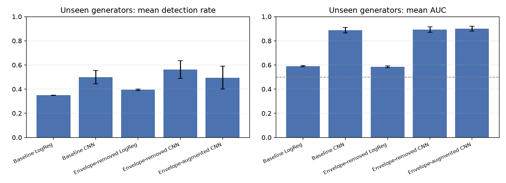
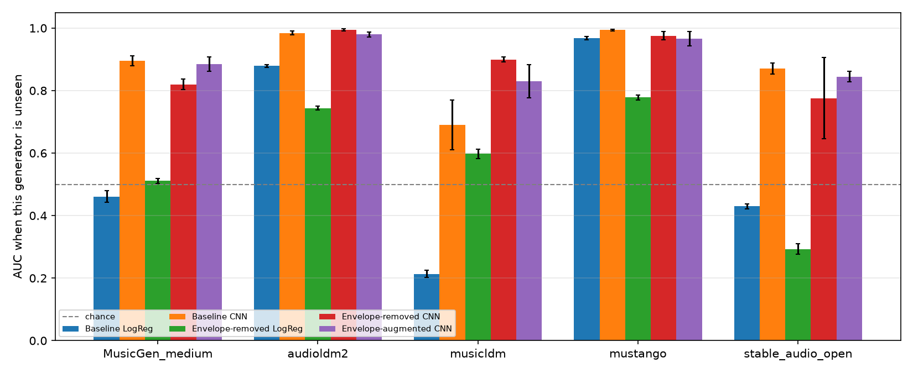

研究
两个小研究，同一个问题
AI 音乐检测器在训练过的数据上表现很好，一碰到新东西就不灵了。我在音频和乐谱两个方向上都试了一下。
AI 音乐检测：碰到没见过的模型怎么办
AI 音乐模型隔几个月就出一个新的，检测器只有在没见过的模型上也管用，才算真的有用。我用真实音乐和 4 个文字生成音乐模型做的片段训练检测器，再用第 5 个没参与训练的模型来测，5 个模型轮流来一遍。检测器看的是对数梅尔频谱图，一个是基于简单频谱统计的逻辑回归，一个是小型 CNN。我还试了两种办法，不让检测器依赖每个模型整体的频谱轮廓。
0.975CNN 在见过的模型上的平衡准确率
0.50没见过的模型做的音乐里，被认出是 AI 的比例
0.21一个看频谱统计的检测器在 MusicLDM 上的 AUC，低于 0.5，等于把 AI 音乐当成了比真歌还真

- 数据。2,856 段真实音乐（来自 MusicCaps）和 27,605 段 AI 音乐，来自 5 个“文字生成音乐”的模型，每段 10 秒。同一个提示词生成的片段只放在训练或测试一边，免得检测器靠“认内容”蒙对。
- 怎么测。每次拿掉一个模型不让检测器学，再用它来考。新 AI 模型一发布，音乐平台遇到的就是这种情况。
- 没有一招通吃的办法。把每段音频整体的频谱轮廓去掉后，MusicLDM 的 AUC 从 0.69 涨到 0.90，可 MusicGen 和 Stable Audio Open 反而变差了。
- 好不好认，跟模型结构有关。解码方式相同的模型（梅尔频谱 VAE + HiFi-GAN），学会一个就能认出另一个；MusicGen 和 Stable Audio Open 结构不一样，一直很难认，只认出 18%–34%。

不足：MusicCaps 的真实音乐只下载到一半多（52%）；真实音乐是 YouTube 压缩过的，AI 音乐是无损的；只做了 3 次实验；只测了 5 个开源模型。
贝多芬分类器能被拼接仿作骗过吗
有些 AI 模仿作曲家的方式，是从他的作品里找出真实的小节，再拼在一起。我想知道作曲家分类器能不能分辨这种仿作和真作。我先在 MAESTRO 钢琴数据集上复现了一个已发表的“是不是贝多芬”分类器（Galajda & Hua, 2024），再把不同贝多芬作品的真实小节拼成仿作去测它，最后又训练了一个只看前后小节怎么衔接的检测器。
0.96复现出来的分类器的 AUC，换成更严格的数据划分也很稳
83–92%拼接片段被认成贝多芬的比例（真贝多芬是 83%）
0.94–0.96只看衔接处的检测器，分辨拼接和原作的 AUC
- 复现。按 Galajda & Hua（2024）的做法，用两层 GRU，每 2 秒算 27 个音乐特征。换成按作品、按录音年份划分数据，AUC 还是 0.96。
- 拼接。把不同贝多芬作品的小节拼起来，分数一点没降。连其他作曲家的曲子，拼一拼也更容易被认成贝多芬（从 8% 涨到 25%）。
- 看衔接。专门看两个小节接口的地方：调性有没有突然变、旋律有没有大跳、音符一下子变密还是变疏、延音有没有断。靠这些就能把拼接片段挑出来。
- 还是同一个老问题。只学过随机拼接的检测器，碰到挑过、听起来顺的拼接，AUC 掉到 0.73；反过来训练，掉到 0.56。挑过的拼接其实顺过头了：旋律平均只跳 1.6 个半音，真贝多芬是 9.1。